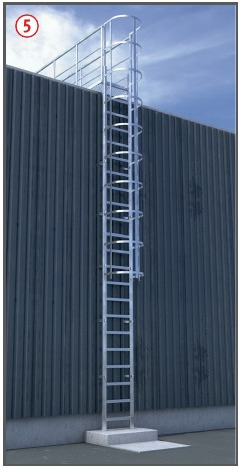
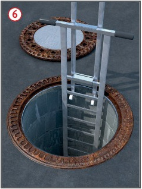
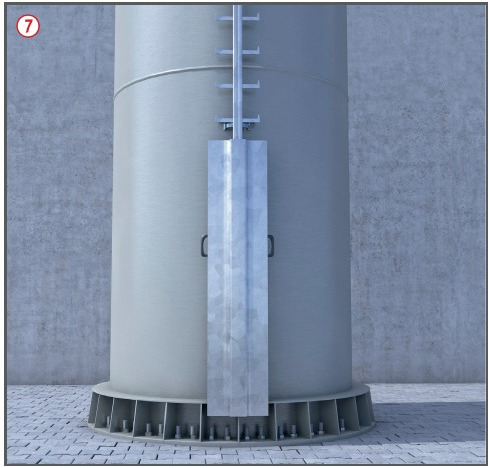
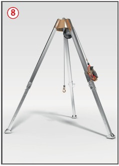

Fehlende oder mangelhafte
Sicherheitseinrichtungen sowie
die Nichtbenutzung von persönlicher
Schutzausrüstung gegen
Absturz können zu Abstürzen
führen.
Fehlende Ruhebühnen und
mangelnde persönliche Eignung
können zu physischen Überlastungen
führen.
Allgemeines
Steigleitern sind zulässig,
wenn der Einbau einer Treppe
betriebstechnisch nicht möglich
ist. Auf Grundlage einer Gefährdungsbeurteilung
können Steigleitern gewählt werden, wenn
der Zugang nur gelegentlich
(z. B. bei Wartungsarbeiten) von
einer geringen Anzahl unterwiesener Versicherter genutzt
werden muss. Dabei ist die
Rettung sicher zu stellen.
Schutzmaßnahmen
Steigeinrichtungen
Es muss eine fachgerechte
Montage nach Herstellerangabe
durchgeführt werden .
Steigeinrichtungen müssen
den Betriebsverhältnissen entsprechend
aus resistentem/
korrosionsgeschütztem Material
hergestellt sein.
Steigleitern müssen ab einer
Fallhöhe von mehr als 3 m bei
Zugängen zu maschinellen Anlagen und von mehr als 5 m bei
sonstigen Zugängen, soweit es
betriebstechnisch möglich ist,
mit Einrichtungen zum Schutz
gegen Absturz ausgestattet sein
(z. B. Steigschutzeinrichtungen, Rückenschutz ).
Steigleitern an Schornsteinen sind zum Schutz gegen Absturz mit Steigschutzeinrichtungen auszustatten.
Steigschutzeinrichtungen an Schornsteinen sollten aus Schienen mit mitlaufenden Auffanggeräten bestehen
(Stahlseile sind nicht zu empfehlen). Bestehender
Rückenschutz oder Ruhebügel
müssen nach der Montage
der Steigschutzeinrichtungen
demontiert werden.
Bei Fallhöhen von mehr als
10 m darf nur PSA gegen Absturz
vorgesehen werden .
Bei Steigleitern mit Rückenschutz
sind Ruhebühnen in Abständen
von 6 m (bei Zugängen
zu maschinellen Anlagen) bzw.
10 m vorzusehen.
bei Verwendung von Steigschutzeinrichtung
mit Schiene
darf der Abstand der Ruhebühnen 25 m nicht überschreiten.




Steigleitern in Schächten
müssen ohne Rückenschutz, mit
Haltevorrichtung an der Austrittsstelle
und Ruhebühnen alle 10 m
ausgestattet sein . Zum Schutz
gegen Absturz z. B. temporäre Anschlageinrichtung verwenden.
Beim Einsatz von Gleit- oder
Kletterschalungen ist ein absturzsicherer
Übergang zur
Steigleiter herzustellen.
Benutzung des Steigschutzes
Es sollten nur Beschäftigte
eingesetzt werden, die hierfür
körperlich geeignet und unterwiesen
sind.
Die Nutzung an der Einstiegsebene
sicherstellen, gegen
unbefugtes Benutzen sichern
und Steigschutzschienen mind.
1,10 m über den obersten Standplatz
hinausführen .
Beim Benutzen des Steigschutzes
Auffanggurte nach
DIN EN 361 mit Steigschutzöse
verwenden .